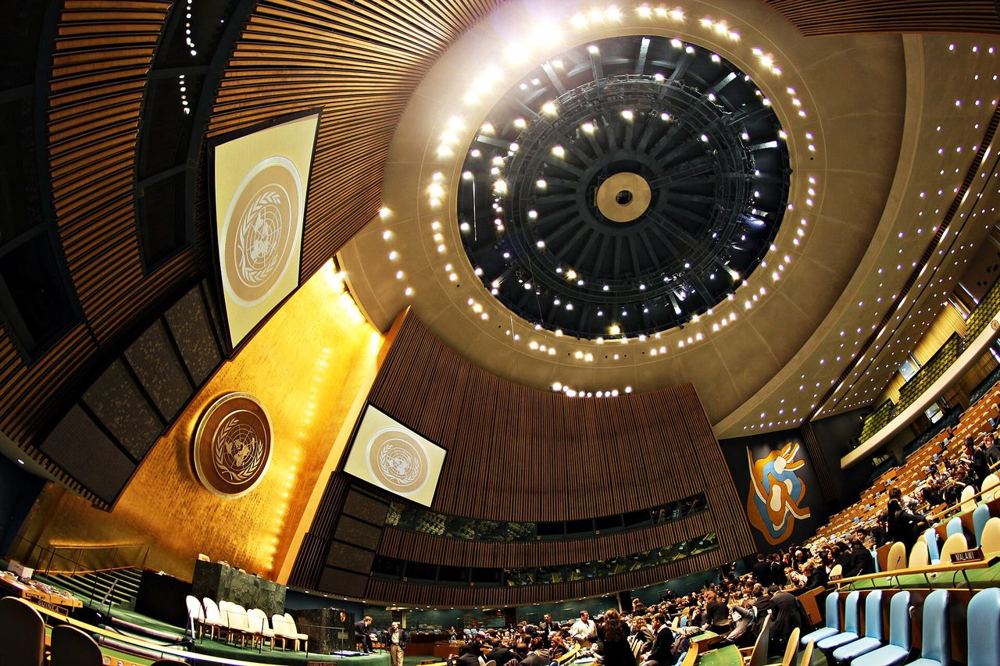
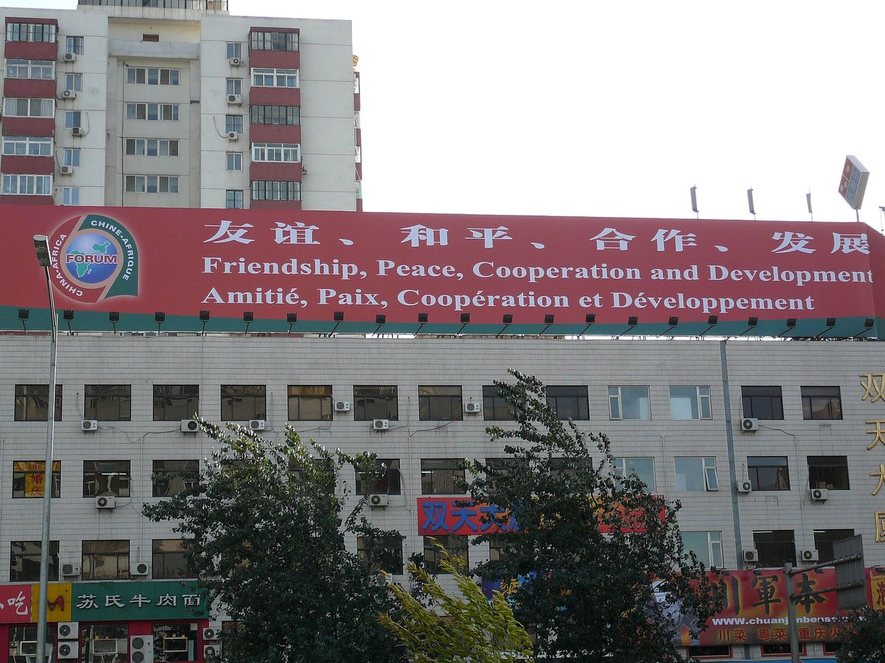
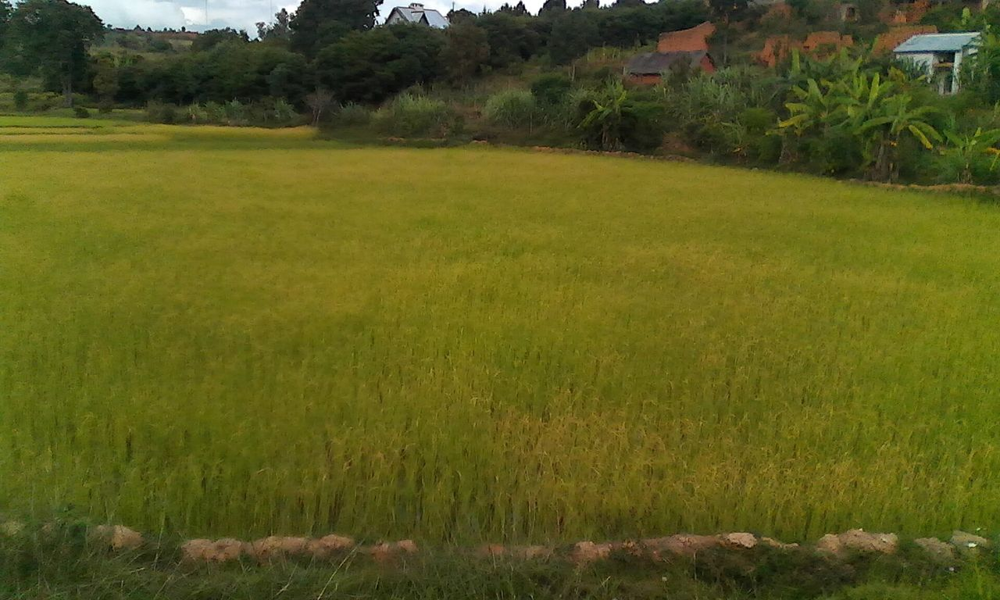
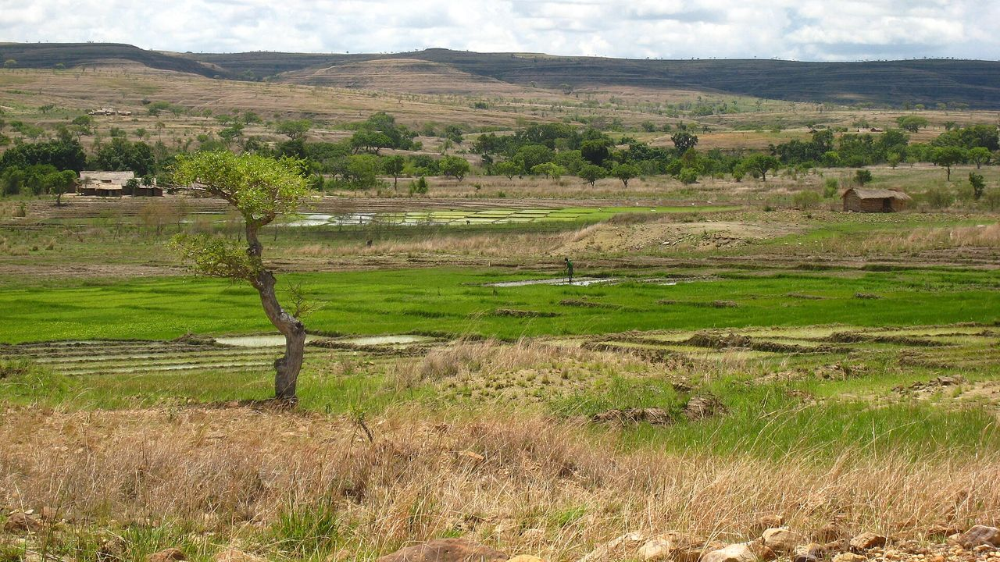

01

人类命运共同体
各国命运与共。安全和发展不能由一家独享，只能由各方共同维护。援助因此不是恩赐，而是共同事业的一部分：公共卫生、粮食安全这些事，谁也无法单独解决。
对应实践：案例一 疫苗习近平新时代中国特色社会主义思想概论
理念回答为什么援，实践回答怎么援。三个理念，三个现场。
知是行之始，行是知之成。王守仁《传习录》
世界进入新的动荡变革期，和平赤字、发展赤字、安全赤字、治理赤字有增无减。中国的回答，写在三条主张里。
01

各国命运与共。安全和发展不能由一家独享，只能由各方共同维护。援助因此不是恩赐，而是共同事业的一部分：公共卫生、粮食安全这些事，谁也无法单独解决。
对应实践：案例一 疫苗02

真实亲诚是对发展中国家的态度：真诚、实在、亲近、诚恳。正确义利观讲取舍：义利相兼，以义为先，不能只算自己的账。落到项目上，就是把技术留在当地，让对方能自己种、自己造。
对应实践：案例二 杂交水稻03
先救人，再谈其他。战乱里把身体挡在孩子前面，疫情里把疫苗送到最需要的地方。人道主义不是姿态，是在具体时刻做出的具体选择。
对应实践：案例三 维和案例 01 · 2020
中国新冠疫苗作为全球公共产品与国际抗疫合作
2020 年 5 月 18 日，习近平主席在第 73 届世界卫生大会视频会议开幕式上宣布：中国新冠疫苗研发完成并投入使用后，将作为全球公共产品，为实现疫苗在发展中国家的可及性和可负担性作出中国贡献。
疫情期间，中国向 120 多个国家和国际组织供应超过 22 亿剂新冠疫苗，向 153 个国家和 15 个国际组织提供抗疫物资，向 34 个国家派出 37 支抗疫医疗专家组。动作也走在前面：最早承诺将疫苗作为全球公共产品，率先支持疫苗研发知识产权豁免，最早同发展中国家开展疫苗生产合作。
22亿剂
供应新冠疫苗
120多个
国家和国际组织
37支
抗疫医疗专家组
2021 年 3 月 20 日，中国向哥伦比亚提供的第三批新冠疫苗运抵波哥大。正在外地考察的时任总统杜克特意举行仪式，向全国播出视频讲话。一份援助抵达受援国时意味着什么，这个举动已经说明。
对应理念：人类卫生健康共同体。把疫苗作为公共产品而非筹码，回应“免疫鸿沟”，是全球发展倡议在卫生健康领域的具体实践。
案例 02 · 2007
中国杂交水稻技术援助马达加斯加
马达加斯加种植水稻的历史很长，但受种子质量、种植技术和基础设施制约，产量长期无法满足当地口粮需求。2007 年，中国援马达加斯加杂交水稻示范中心项目正式启动。
到今天，中国杂交水稻在马达加斯加累计推广面积已达 9 万公顷，平均每公顷产量约 7.5 吨，是当地常规品种的 2 至 3 倍；马达加斯加成为非洲种植杂交水稻面积最大的国家，也是第一个实现杂交水稻商业化的非洲国家。中国专家选育出 5 个适应当地环境的稻种，举办数百场技术培训，累计培训 2000 余人。育种、制种、种植、加工、销售，全产业链都留在了当地。
9万公顷
累计推广面积
7.5吨/公顷
平均产量
2000余人
累计接受培训
村民把这稻子叫“擦拉贝”，当地语意思是“最好的东西”。为表达感激，马达加斯加把中国杂交水稻的稻穗印在面额最大的 20000 阿里亚里纸币上。2023 年，马达加斯加农业部原秘书长拉库托松·菲利贝尔到长沙，第一件事就是去袁隆平墓前祭拜，带去一碗在非洲种出的杂交稻米。
对应理念：从技术援助到能力共建。以粮食安全合作落实全球发展倡议，帮受援国把“救济粮”变成“自己种的粮”，既授人以鱼，也授人以渔。


案例 03 · 2015
中国首次向南苏丹派遣成建制维和步兵营
2015 年，中国首次向南苏丹派遣成建制维和步兵营，承担保护平民、巡逻警戒和防卫护卫等任务。在远离祖国的非洲大陆，一场突发事件让中国维和军人的形象留在了当地民众心里。
当年 5 月，营区附近的难民营发生大规模械斗，数百名难民手持棍棒、砍刀相互攻击。三连连长张勇带队员赶赴现场，组织隔离冲突人群。一名三四岁的小女孩被挤进人群中心，抱着头蹲在地上，石块不断飞过。张勇冲上前，用身体护住孩子，飞石砸在身上，右小腿被击中，鲜血直流，他始终没有退缩。冲突双方渐渐放下石块和棍棒，一名年轻女子跑上前抱起孩子，不停鞠躬致谢。
“我也是一名父亲，看到这样的情景，没有多想就冲了上去。”
张勇，中国维和步兵营三连连长
对应理念：从保护一个陌生的非洲儿童，到参与联合国维和行动。中国坚持走和平发展道路，尊重生命、维护和平，并在国际社会中承担应有责任。
.jpg){kind=link}


.jpg){kind=link}
.jpg){kind=link}